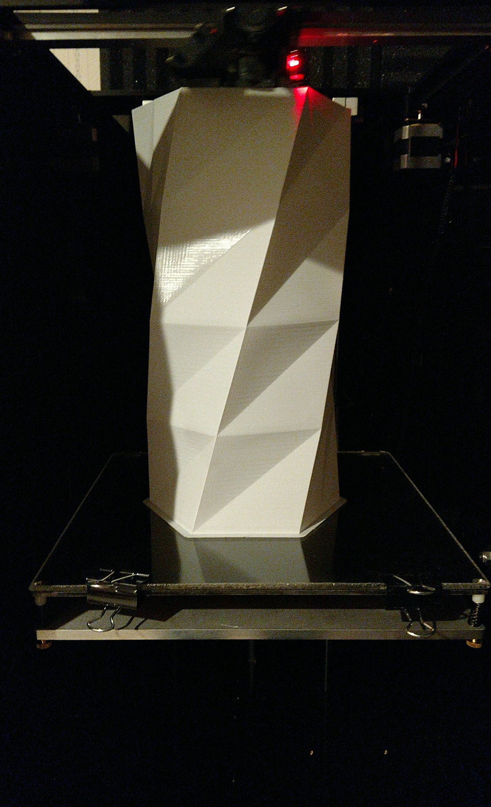

Jeremy Sexton's Portfolio
I am Jeremy Sexton, a kansas native who is 28 years old. My background in the industry goes all the way back to my earliest years, with my father encouraging computers and their use in my everyday life. Because of this I have always held a great passion and interest in anything relating to the Tech industry. My focus recently has been on 3D Printing technology and the way it can shape our manufacturing industries and make daily life easier. To that end I have recently acquired my second 3D printer, which is produced right here in Kansas City.
